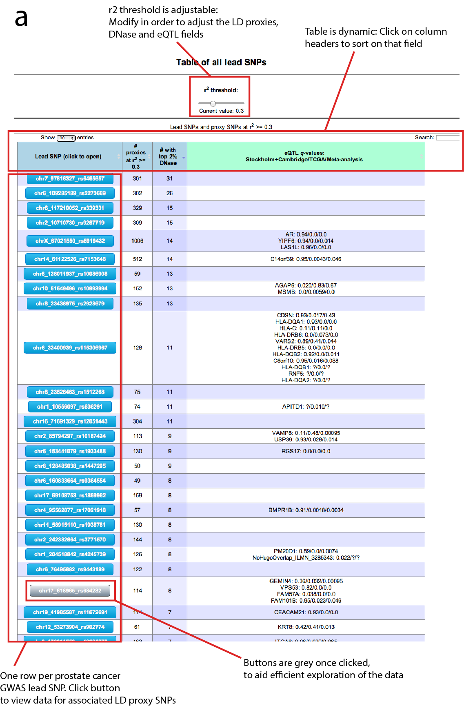
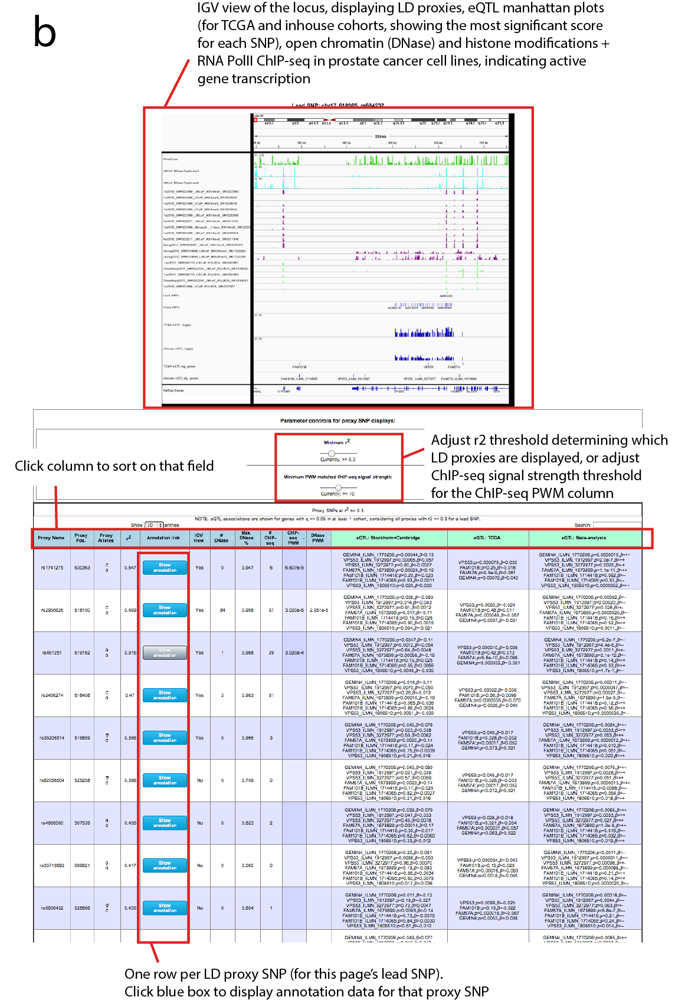
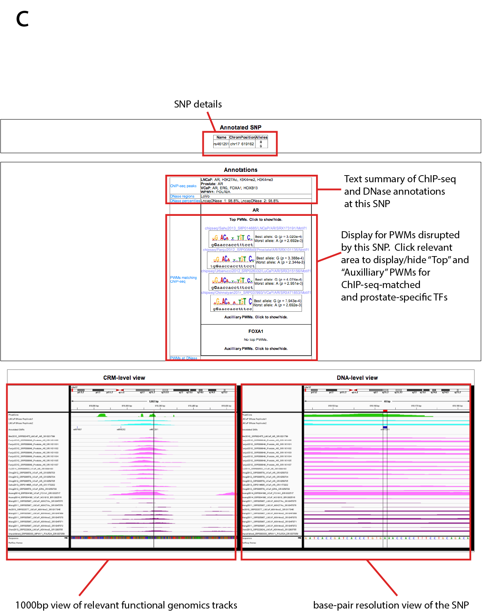

Guide for using the LD proxy visualisation system
a) Index web page, with each GWAS lead SNP shown as a separate row in the
table, with annotation and eQTL summary statistics as separate columns
b) Locus-level view web page, showing an IGV visualisation of relevant data
surrounding a particular GWAS lead SNP, and a table summarising annotation
features for each of the proxy SNPs
c) Visualisation of a single LD proxy SNP,
showing the SNP details, PWMs disrupted by the SNP with matched ChIP-seq data,
prostate-specific TF PWMs disrupted by the SNP if the SNP occurs in open
chromatin, and finally CRM-level of DNA-level IGV visualisations of relevant
ChIP-seq data, together with PhastCons and LNCaP DNase data, only shown if
available evidence indicated the SNP may disrupt a CRM in prostate cancer cell
types.


